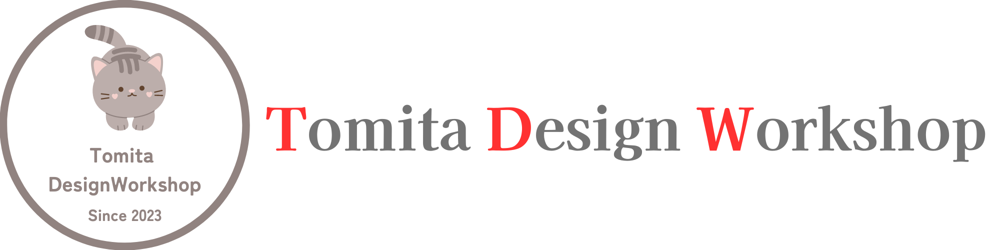

Profile
Previous |
大学卒業後、ソフトウェア開発会社勤務 退職後はテープ起こし、データ入力、データ集計作業、マニュアル作成、 調査カルテのデジタル化などを請け負い、様々な企業に貢献しました |
|
ソフトウェア開発会社のスクール部門にてPCインストラクターを担当。 |
Current |
Future |
“人との出会いを大切に”WordやExcelなどのMicrosoft社の製品に始まり、WordPressやWix、Jimdoなどのツールを使ったホームページ作成など、様々なプロジェクトに貢献してきた経験を活かし、仕事を通じて出会った人との縁を大切にしながら、パートナー様と一緒に成長していきたい思っています。 |